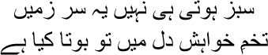

19

These breasts will never give you a harvest
Why do you keep sowing the seeds of desire in them?
ne morning, a dream made me shoot upright in bed with terror. My throat was parched, my hands and legs trembled uncontrollably, I tried to call for Kallu but no sound emerged. I couldn’t forget this dream all my life. A caravan, a kafila, was wending its way through the desert, where a blue glow was visible everywhere. The camels and the people were not real—it was like a convoy of shadows. They didn’t speak to one another. Only a collective, stricken cry was heard from the distance every now and then, as though a battle was in progress somewhere. I could make out that those cries were the sounds of encounters with death. I desperately wanted to talk to my fellow travellers. I had no idea where I was going as part of this caravan. Why was I even part of this group? ‘Where are we going, janab?’ I asked the person next to me.
He didn’t answer.
A little later I asked another person, ‘How much futher?’ He didn’t respond either.
Could these people not speak? Or wouldn’t they speak to me? Why had they added me to their group then?
A dark shadow spread over my heart. I asked some of them for water, but they only looked at me, neither offering me water nor saying a word. I decided I would have to escape. I tried to turn my camel in a different direction, but it refused to be detached from the kafila. Finally it threw me off its back with a jerk. Falling on the sand, I saw the convoy moving ahead. But, incredibly, I didn’t have the strength to get up, my brothers; the desert seemed intent on gobbling me up. Eventually a dense mass of darkness descended over me. Yes, a bird with enormous wings, its long neck covered in spikes. I had never seen such a bird before. Where had it come from, why was it swooping down on me? Trying to escape, I found myself unable to make the slightest movement. The bird perched on my chest, its wings outspread, staring at my face. It had no eyes, only sockets. Now its long beak came down on my chest, and the bird began to peck at me. It was intent on piercing my skin and consuming my marrow and my blood; it kept jabbing at me, tearing at my flesh …
That was when I woke up. To tell you the truth, Manto bhai, for the first time in my life, I was afraid. What did this dream mean? Was my day of reckoning at hand, then? Although I was a glutton, I could not eat all day. Every time I looked at food I saw the pointed beak of the murderous bird instead. Maybe Kallu had carried the information into the ladies’ chambers, for Begum visited me in the evening.
— I believe you haven’t eaten all day. Are you not well?
— No, Begum.
— What is it then?
Conversation with Umrao Begum had virtually ceased, you know. But I wanted to tell her about the dream. Maybe she would be able to offer me some comfort, no matter how meagre. Men become helpless sometimes, Manto bhai; instead of seeking the hand of God they seek the company of a woman.
— A nightmare has made me nauseous all day.
— Tell me what you saw.
I described my dream to Begum. A twisted smile played on her lips. —You deserve this dream, Mirza sahib.
— Yes …
— You may not have eaten anything because you’re nauseous, par sharaab to piya na? You’ve had a drink or two, haven’t you?
I didn’t respond.
— You’re sunk in alcohol and gambling; what other dream can you possibly expect? Pleasant dreams are not for you, and you don’t want them either.
I slapped myself mentally. Why did I have to tell Begum of my dream? Now I would have to hear what a deviant I was, and for someone who does not follow the Shariyat, all of life was a nightmare. I knew only one way to defend myself in such situations, and that was to dismiss the whole thing with a joke. This was the only resource at my disposal. I told Begum, ‘Pray for me then, Hazrat Musa ki behan.’
— Pray for you? You don’t believe in the Shariyat, you don’t even read the namaz, leave alone keeping rozas. How can I pray for you? God alone knows what will happen to you …
With a smile I said, ‘My afterlife will be no worse than yours. It will be better, in fact.’
— How do you know?
— I can see it.
— What can you see?
— You will be accompanied by shaven-headed holy men in your afterlife, dressed in blue, tooth-scrubbing twigs fastened at their waists, holding little pitchers of water, and wearing morose expressions.
— Really? Even Begum smiled. —And who will your companions be?
— Formidable, tyrannical kings, all of them. Fara’un, Nimrod. Swords in scabbards at their waists. With a waxed moustache, I will strut about with them. Angels will escort me on either side.
— Very well, that is how it shall be. Begum rose to her feet. —I’m going now. Do have something to eat at night. Drinking on an empty stomach isn’t good.
— Begum?
— Yes?
— Is the Shariyat so strict that it’s an act of infidelity to even listen to someone who does not follow it? Do you have time to listen to a story?
— Whose story?
— Shaikh Abu Sayeed’s. A Sufi saint from Khorasan. One day the shaikh was asked by his students, who is the cleanest person in this city? The shaikh said, why, it’s Lokman, of course, is there a man as clean as him? His disciples were astonished. Lokman was a lunatic, his hair was matted, he was dressed in a dirty, tattered robe, he uttered profanities constantly. The shaikh explained, ‘Do you know who a clean man is? Someone who isn’t involved with anything at all. That is why no one is as pure as Lokman.’
— Do you consider yourself just as pure?
— No, Begum. All I know is that there is no purity in following your Shariyat alone. If the truth only hammers away like a rock, it has no value for me. It’s better to live with lies. None of us know where we will be on Judgement Day.
Begum remained standing for a while before disappearing into the mahalsarai.
I was twenty-nine then, Manto bhai. I was too young to see the Day of Judgement in a dream. It was that same year that my brother Yusuf Mirza went completely insane. My father-in-law Mahroof sahib had died the year before. My life was straightforward, financed by my paltry pension and a combination of charity and debt. But now I reached a dead end. Mahroof sahib’s death had shaken my very core. My creditors began to pressure me to return their loans. Since I could not change the lifestyle I was used to, there was only one option— find some money somewhere, somehow. Increase your income Ghalib, I used to tell myself continuously, or how will you live? And if you cannot live the way you want to, how will you write ghazals? Has anyone in this world given birth to beauty on a starvation diet, Manto bhai?
I was now forced to take stock of the pension I received from the British. Don’t imagine it was only for my own expenses—I also had to look after Yusuf Mirza’s family, their servants and maids, and his children. Yes, it is true that I lived my own life of pleasure, but I never thought of abandoning anyone. How could I have? I existed only because they were around me. What power would I have if I lived in isolation? You know, don’t you, Manto bhai, that even writing a couple of lines needs the company of other people.
I had never expected to get involved in financial matters. Of course I needed money to enjoy the pleasures of life, but whenever I considered such questions as how to get hold of it, it was like the sky falling on my head. But then, is there anything a man cannot do if put to it? He can float with the clouds like one of them; he can also burrow under the earth like a worm. So I had no choice but to examine the British pension closely.
I must explain to you in detail, or else you won’t understand. We used to receive the pension granted by the British from Ahmed Buksh Khan, the Nawab of Loharu-Ferozepur. As it happened, he was my father-in-law Mahroof sahib’s elder brother. My uncle Nasrullah Beg Khan used to work in the Maratha forces. After the Marathas lost to the British in 1803, his position became precarious. Ahmed sahib’s sister was married to my uncle. Ahmed sahib was a polished gentleman. He was the emissary of the king of Alwar for talks with Lord Lake and the British. He was appointed the nawab of Loharu and Ferozepur by keeping both the king and the British happy at the same time. So he got my uncle a position in the British forces. After my uncle, Nasrullah Beg, died in 1806, Ahmed sahib convinced the British that it was their responsibility to look after Nasrullah Beg Khan’s family. But he would perform the task on their behalf, provided they excused him the annual fee of Rs 25,000 that nawabs had to pay. In return, he would not only take care of Nasrullah Beg Khan’s family’s board and keep, he would also maintain a company of fifty cavalrymen for the British. Making enquiries about the pension, I discovered that while Rs 10,000 had been allotted for the upkeep of my uncle’s family, only Rs 5,000 was actually provided. I used to get Rs 750, and there was nothing allotted to my brother. Meanwhile someone named Khwaja Haji, who had nothing to do with my uncle, was pocketing the rest of the money. It was a complex knot, and as you know, Manto bhai, no knot related to money can be unravelled easily.
In the meantime, there was yet another problem. Ahmed Buksh Khan had two wives. Shamsuddin was his son by one of the wives, while Aminuddin and Ziauddin were his sons by the other. Aminuddin and I were great friends. In 1822, after seeking permission from the king of Alwar and from the British, Ahmed sahib had declared Shamsuddin his heir. The younger brothers were furious. Their mother was an aristocratic Muslim, while Shamsuddin’s mother was a commoner from Mewat—how could Shamsuddin be the heir? Since Amin bhai was my friend, I got into trouble. Shamsuddin began to play games with me. Sometimes he gave me far less than my due, sometimes he didn’t send my pension for successive months. After Mahroof sahib’s death I was in dire straits. So many mouths to feed, and pressure from creditors on top of that. I wrote several letters to Ahmed sahib in the hope that he would make some arrangements. But there was no response from him. One day I arrived in Ferozepur. He was in a terrible state. His body riddled with sores, he somehow managed to sit up in bed. I told him directly, ‘Either you must keep your word, janab, and ensure that we get our dues, or else I will appeal to the government.’ Grasping my hand, he began to weep. I realized that Ahmed sahib had no say in the matter; he was bound by Shamsuddin’s diktat. I decided to meet Shamsuddin and settle things once and for all. I would have to determine my own course of action now. The May 1806 agreement between Ahmed sahib and the British said that Nasrullah Beg Khan’s heirs would have to be paid a stipend of Rs 10,000. But in another agreement dated June of the same year, the amount had been reduced to Rs 5,000. How was that possible? This was nothing but a counterfeit document. I met Shamsuddin. He spoke and behaved very courteously with me. When I brought up the subject of my visit, he said, ‘I don’t know anything about the agreement, Mirza.’
— Then what am I supposed to do?
— Whatever you think best.
— But you’re not sending the money on schedule.
— Do you think the trees shower money on us?
— Meaning?
— I can only send the money if I get it myself.
— But how am I supposed to run my household?
— What household, yaar? Liquor, whores, ghazals—that’s all. You’re a great poet, we respect you, why do you hanker for money? Stay with us for a few days, enjoy yourself.
— Yusuf mian isn’t well. He gets bouts of high fever, goes into a delirium.
— Leech him, get the poisoned blood out, he’ll be fine.
— We’d all be fine if you’d only send the money on time, Shams bhai.
— Let’s see. As the lord pleases.
That phrase ‘as the lord pleases’ was Shamsuddin’s final nail in my coffin. I decided that I would have to go to the capital, Calcutta, and expose the counterfeit agreement in the royal court. I told myself, you flit about in the sky, Mirza, and write your ghazals, let’s see you confront life for once and get your dues. Let’s see what you’re capable of, let’s see you fly in the sky and keep yourself grounded in financial calculations at the same time. Only then will you prove to be a poet. If Mir sahib could take so much humiliation, if he could withstand the punishment of being branded a madman, only for loving Mehr Nigar, can you not do this? So many people are looking to you just for their two square meals a day; the beauty of the ghazal and of living a good life are not distinct from each other, Mirza. So I had to go to Calcutta to present my case at the court.
But how was I to go? I had no money; besides the cost of travel, I had to think of my family’s daily expenses. There was no telling when Shamsuddin would send money, after all. On top of which, Yusuf mian had gone raving mad. It was heartbreaking to look at him. He just sat by himself, muttering incomprehensibly. Frequently he disappeared for several days at a stretch before returning. Sometimes I’d be tempted to send him to the asylum. But they chained people there. Yusuf was very tender hearted, Manto bhai. I couldn’t imagine him being chained and whipped. There’s no one as helpless in the world as lunatics, people can do whatever they please with them; but do we have the right to do this? Is a person who always judges the world only with logic any less mad? He who lives on reason alone is a lunatic asylum himself. Who will explain, tell me, that the thinnest thread separates the insane from the sane? Some people can smother their dreams, others cannot; the one who cannot goes mad, while the other one behaves like a normal person, but what he has been hiding might well come out one day, for he has no control over it. That is why I used to think all human beings are on the road to madness, although no one can predict just when the djinn will possess them.
One day I pinned Yusuf down. Patting his head, I asked, ‘Tell me what’s bothering you.’
All he did was smile, as though he hadn’t even understood what I said.
— Yusuf …
— Yes?
— What goes on in your head, Yusuf?
He didn’t respond. I asked him many questions, but he only stared at me. I realized, Manto bhai, that no matter how powerful our reasoning is, we will never be able to penetrate a lunatic’s mind. Their language is different from ours; he had forgotten our language.
I had no time for distractions. I simply had to go to Calcutta. The issue of the pension had to be settled once and for all. I would have to prove that the agreement of June was counterfeit. I went off to tell Begum the whole story.
— You’ll go to Calcutta? I believe it’s a long way away.
— But I must go. Or else we will starve to death one day.
— Will you succeed, Mirza sahib?
— I have to, Begum.
Putting her hand on mine, Umrao said, ‘But quarrelling over money is not for you, Mirza sahib.’
— But that’s what I must do now.
— And your ghazals?
— My ghazals! Are you concerned about my ghazals, Begum?
— No, but I do understand that they make you happy.
I saw Begum in a new light that day, my brothers. For the first time she spoke about my ghazals.
I said, ‘You will have to take charge of things for a few years, Begum.’
— Don’t worry. But this long journey will need money, where will you get it?
— I’ll borrow.
— Again?
— I’ll come back victorious, Begum. I’ll clear all my debt.
— Will anyone lend you money anymore?
— Of course they will. I’m going to Calcutta to realize all my dues, Begum. I’ve been cheated for a long time, now they cannot cheat me anymore.
— But you love to be cheated, Mirza sahib. Begum smiled.
— No, Begum, no, no one can cheat me. Don’t I have a stomach to feed even though I compose ghazals?
Mathura Das, Darbari Mal and the rest placed bets on my chances of success when they heard I was going to Calcutta. I convinced them that I would definitely win the case, and they would get their money back with interest. It seemed exciting. So the game was gathering pace. I simply had to win. When I looked at myself in the mirror, I seemed to see a jackal. Let’s go, mian, let’s go to Calcutta and find out whether our fortune changes or not.